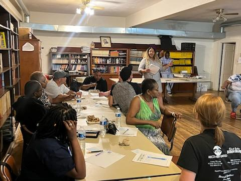

Our Curriculum
PAVE's curriculum strategy involves a structured 12-step approach or 12 focused topics, each addressed every three weeks in a group learning setting. Weekly sessions are facilitated by a PAVE team member and a Presenter active in the community.
Sessions are completed in monthly session format. Each month, a new topic will be focused on and discussed over the 3 week time schedule. A comprehensive review of each topic is discussed in week 4. Topics such as: Communication, Self-love, Co-parenting, and Accountability are covered.
Each weekly session follows this layout:
- Participants get their food and settle down into focus mode
- Welcome/ Icebreaker activity (10 mins)
- Check-in (10 mins): The class will review the topic from the previous week. Engage with participants about how/if they implemented any new actions with their family at home.
- Discussion session (45 mins): PAVE team member will introduce the new topic. Presenter will conduct the session through open discussion interactions with the class.
- Wrap Up (15 mins): Presenter will close the session with questions/evaluation from class about what was learned or any questions. Pave team member or Presenter will give class “food for thought” concerning what to expect or think about before next week's session.

Parent Activity - TBD - Annual Class Celebration!
We will conclude the completion of the program in the month of December with our annual celebration. We invite all participants with good standing attendance to join us for a graduation ceremony where we acknowledge their achievement and present them with a certificate of completion.